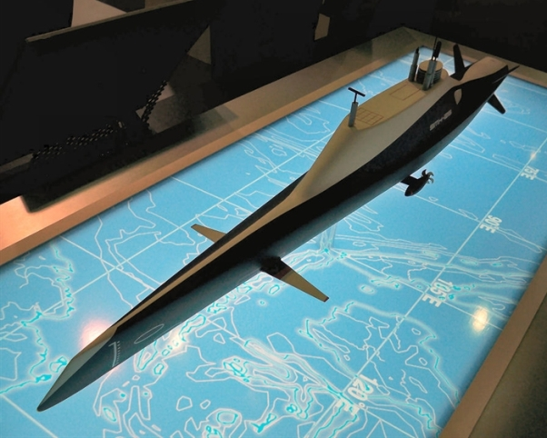
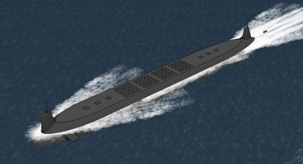

我在2015年第三季，曾提起共軍的新半潛船。它原本是民用的特殊船隻，用來運載超大型貨物，例如船艦、潛艇、深海油井等等。進入海軍，它仍然只執行運輸任務。至於做爲作戰艦艇，半潛式船隻在現代還沒有服役的前例，所以這次消息傳來，共軍將推出常潛式海洋攻搜作戰平臺，不但在技術上算是完全創新，在概念上也是全新的突破。

這是法國DCNS公司在2010年發表的SMX-25概念設計，全長109米，上浮時排水量2850噸，水下4560噸。在共軍的常潛攻搜艦曝光之前，它是現代唯一的“半潛”作戰艦艇設計。
上圖裏的SMX-25其實具有完全下潛的能力，所以稱為“半潛艦”有些名不符實。它實質上是一艘異樣的常規潛艇，只不過針對水面航行重新優化，所以水面航速高達38節，這是以犧牲水下航速（只有10節）和潛深而達成的折衷選擇，使得它在戰術運用上，基本等同二戰之前的潛艇（有些人戲稱它們為能偶爾下潛的魚雷艇）。不過它也裝載了對空雷達和防空飛彈，因此對反潛機免疫，只有在遭遇反潛護衛艦的時候，才會有真的麻煩。
共軍的常潛式海洋攻搜作戰平臺，和SMX-25是不一樣的。它並沒有完全下潛的能力，因此節省了耐壓殼、電池、魚雷艙和壓水艙等等潛艇專有的昂貴配備，使建造費用大幅降低。在低速的時候，水綫高於大部船身，只有兩個艦島露出水面，就像準備伏擊的鰐魚只露出眼睛和鼻孔。在高速的時候，騎浪型船底（Planing Hull，美國的自由級濱海戰鬥艦也采用了這個原本用在高速快艇上的設計）將整艘船擡出海面，特殊設計的儲水艙因慣性和重力作用，自動排出壓艙水；這比潛艇使用壓縮空氣，要簡單便宜可靠。
這是常潛式海洋攻搜作戰平臺的設計總師董文才的遺照，他已於去年因肺腺癌而壯志未酬身先死。照片中他所畫的簡圖就是常潛攻搜艦的側面和截面圖。請注意它的截面為扁五角形，兩側應該是儲水艙（否則以這個設計預備浮力之小，稍有擦撞就有沉沒之虞）。
因爲沒有潛艇的耐壓殼，常潛攻搜艦有大量的空間來裝置垂直發射系統，因此對空對地對海的火力都很强大；騎浪型設計則給予它極高的速度。目前有傳言說它排水量兩萬噸，極速在60節以上，但是這實在有些駭人聽聞，我認為5000噸（不含壓艙水的空重，和052D大小類似；但是因爲它特殊的半潛設計，滿載排水量可能高達空重的兩倍，即10000噸）和40節以上是比較保守合理的估計。高速加上火力，是二戰之前巡洋艦（現代美軍的巡洋艦，已經改變成空戰指揮艦的代名詞）的定義和特徵。當時的主力艦（即戰列艦Battleship和戰列巡洋艦Battle cruiser）以艦隊決戰為專業，前出偵察、打擊小型目標以及威懾殖民地則是巡洋艦的活兒。我預期這型常潛攻搜艦在戰術運用上，將成爲現代版的舊式巡洋艦。共軍把它稱爲“攻搜艦”，也就是“攻擊”加“搜索”，基本上已經明示了它的用途。

這是大陸網友所做的CG想象圖，並不準確，太過於類似潛艇。真實的常潛攻搜艦寬度很大，像是一艘放大了的高速快艇。在低速時，海水會漫過中段，只有前後兩個艦島露出水面。當然艦島必須遠大於圖中所示，否則無法承受惡劣海況。因爲它沒有艦隊區域防空的任務，只有點防空的需要，我預期它的電子設備比055和052D都簡單得多，是與054系列同級的。我也預期這型攻搜艦主要會以低速運行，以保持隱身狀態並且節省燃油。只有在武器已發射，所以行蹤暴露之後，才會以高速脫離戰場。
那麽它的半潛式設計有什麽好處呢？這主要是因爲現代的預警機，可以在400-600公里之外發現5000噸級的中型艦艇，因此獨立進行偵察和作戰的水面艦艇很容易被航母戰鬥群或岸基敵軍發現並擊毀，這是現代艦隊不再有舊式巡洋艦的原因，也是我一再强調國軍自建驅逐艦是自找死路的理論基礎。要在現代戰場的複雜電磁環境裏獨立執行任務，只有高速是不夠的，必須有很强的隱身能力，亦即減低雷達截面積至少兩個數量級；因爲探測距離與截面的四次方根成正比，預警機的探測距離將被壓縮到150-200公里。美軍遵循這個思路的發展結果是DDG-1000 Zumwalt級隱身艦，但是因爲設計期間太過低估共軍的技術潛力，專注於炮擊岸上目標，完全犧牲了對艦、反潛、防空和反導性能，以至未服役就已過時。
常潛攻搜艦的妙處，就在於它的隱身性能更勝Zumwalt，卻不必在外形上做太大的妥協，在武器容量、價錢和航速上，都有極大的優勢。再加上它的高速和（高速時）極淺的吃水使它對魚雷完全免疫，對反艦飛彈也因極小的雷達截面，而大幅加强了本身電子反制系統的作用，賦予它很强的戰場存活能力，因此完全可以獨立遂行偵察、打擊、防空、反潛和掩護己方潛艇等等任務（不過可能依照對不同任務的側重，會有不同的配置和型號，這應該也是爲什麽它叫做一個”平臺“的原因）。據稱共軍的第一批次訂單為三艘，但也有傳説競標仍在進行中。考慮到它的革命性新設計，我想共軍如果采用這個設計，就必須像航母系列一樣，花一段時間在各種實驗上，以學習最佳的戰術運用，并且研究設計本身的進一步優化。
crztrader
2017-05-29 00:00
常潜攻搜舰下潜深度可调吗?如果可调至水面下隐身，加个AIP，攻击时接近敌舰难被发现，那就厉害了。但下潜深度可调其结构将复杂很多，或许不如在浮出水面部分做得更隐形来的好。总之，这武器让人有很大的想像空间。
要真的下潛，就必須有耐壓殼等等的纍贅。
crztrader
2017-05-29 00:00
常潜攻搜舰发现反潜机的时间与机会应该优于被反潜机发现，这样是不是反而成为猎杀反潜机的有利武器?
反潛機的搜索雷達範圍在幾十公里左右，攻搜艦對空至少有200公里的搜索距離，所以我說它可以掩護己方潛艇。
mr edwin
2017-05-29 00:00
对这种舰有两个小问题，一是我个人觉得单舰的生存性再强，也不会超过舰队，那么对于一型脱离舰队单独执行任务的舰艇来说，其生存性上必然会经受考验。这型舰确实可以有效降低可探测性，但是依然会有很大几率被反潜机和预警机所发现，那么他要面临的可能就不是反潜机的挖地三尺，而是战斗机轰炸机的狂轰滥炸了，没有空中掩护的情况下，航速三十节还是四十节没有本质上的区别。潜艇面临反潜单位围剿还有生存性，他可就完全死路一条。第二，他可能是一级很偏科的舰艇，我比较怀疑他能否执行防空和反潜任务。054a的雷达分布过于零散，这级舰则需要高度整合化的桅杆，整体设计上势必弄出一个非常巨大的脑袋。这个脑袋无论如何进行处理都会被轻易的侦测到，所以我认为为了其隐蔽性可能不会设计非常复杂的电子系统，有可能只会满足比较低限度的对面对空探测。点防空的意义也不大，因为反潜机可以用小牛之类的武器在点防空射程之外攻击，如果遇上战斗机就只能坐以待毙。所以我认为为了隐蔽性，这型舰恐怕不会有任何有效的防空能力。至于反潜，首先它的直升机甲板设计恐怕不容易，在隐蔽状态下长期置于水下的机库也不能起飞任何直升机。对于性能优秀的潜艇来说，他隐蔽时的主动搜潜，攻潜能力比一般的反潜护卫舰威慑力更小，而在正常状态下又和普通护卫舰无异，多用途能力还不如普通护卫舰。那么在不与舰队配合的情况下他的反潜效率可能很低，为了隐蔽性考虑干脆可以考虑直接省去了。那么仅剩的作用可能只是反舰，和对岸打击，这个还是比较有用的，因为对面打击武器普遍有很长的射程，在敌人展开追击之前有足够时间逃离，不过必须要依靠整个体系作为支撑，作为共军核潜艇对面打击能力的补充。
054的點防空系統，射程70公里，遠超過P8的攻擊範圍。
singsing13
2017-05-29 00:00
从其他消息来源透露，此艘军舰会装载DF21反舰弹道导弹，如果能够部署多艘船在第一、二岛链之间，似乎中国海军能够进一步把美国航母战斗群，推出第二岛链之外，先生认为可信性及实际作用可行吧？谢谢！
DF21大於中共海軍現有所有垂發系統的尺寸，因此不是說上就能上的。
cidy long
2017-05-30 00:00
R&D cost. 中米之间的确是1:10 or higher，我在2001-2005这段时间在米资IT公司研发部门工作，被派往深圳，当时老板（President）告诉我，研发达到完全相同的结果，在深圳花一个米元，在香港需要3个米元，在米国需要9米元。
而且美國的研發計劃很容易落後進度，甚至完全失敗。
cidy long
2017-05-30 00:00
共军的海军是新进发展军种，他们肯定对各国现有海军装备的利弊分析研究个透彻，再决定自己应该发展什么装备。
美國已經失去對大型發展計劃的控制能力，任何全新設備的開發，只怕會比中國貴10倍。
cidy long
2017-05-30 00:00
至于王兄担心的损管方面，我觉得倒是不用太担心。如果是我来设计，由于该舰有两个独立舰岛，我会把它设计成分布式动力和转向系统，也就是说，前后舰岛分布控制动力系统和独立水箱，一旦出现中间部份损毁，可以分开前后两截独自操作。整体生存能力肯定高于同级的其他舰艇。
如果這艘艦受到戰損，最可能出在艦島。這裏若是中了飛彈，會有高級軍官傷亡，戰力也基本消失，但是它倒不是我擔心的地方，因爲船體結構沒有受損，水兵們大多可以活命，大不了投降就是了。
mr edwin
2017-05-30 00:00
一体化桅杆和舰桥部分需要长期露出水面才能获得有效的预警能力和持续航行能力。这两个东西加在一起，体积恐怕绝不会小，无论如何修型恐怕都不会有非常好的隐身能力。对于现役反潜机和预警机来说侦测到他的难度不会很高。我认为最稳妥的方式还是不要保留复杂的电子系统为好。让低矮舰桥浮出水面满足日常航行和基本侦测需求即可。
我預期是054B級的一體化桅杆。
mr edwin
2017-05-30 00:00
我的担心就是，这级舰可能因为过于强调隐蔽性，两面不讨好，在常规战术的执行上不如普通护卫舰，在隐蔽性上又不如核潜艇，那他的地位就会很尴尬。毕竟美军的侦搜能力，对面打击能力全球第一，这级舰很可能出现打不到又跑不掉的情况。埋伏核潜艇的基础是有发达的海底水声监听系统以及海空反潜网络，中国在这方面显然比美国差了一个数量级，靠一艘舰远海偷袭一艘核潜艇的难度可能不亚于台军用海狮海豹什么的偷袭辽宁舰。更何况如果能够大致掌握美国海军核潜艇的活动范围和常用水道，也就不需要这个东西了。共军需要游击舰，但显然这级舰只能成为共军的拐杖，在核潜艇性能尤其是数量足以部分对抗美军的时候，就可以考虑丢掉这跟拐杖了。这个真的不是一个很靠谱的东西。
它比潛艇便宜得多，而且有些任務（例如威懾）必須用水面艦艇，所以總是用得上的。
singsing11
2017-05-30 00:00
也回应一下mr Edwin. 美国DDG1000号称全球最先进的隐身战舰, 现在这艘半潜明显地比它的隐身能力更强, 而防空能力却在同一个水平或更好, 那么有甚么可怕.
LCS的速度，Zumwalt的隱身，護衛艦的價錢，驅逐艦的火力，應該是沒有太多可抱怨的了。
mr edwin
2017-05-31 00:00
如果他的用途以远海游击和打杂为主，其触礁和被水雷炸伤的可能性就不会太大。毕竟没有人会去一个开阔水域布雷，其本身的灵活性也确保了不会像潜艇一样被轻易埋伏。在通过危险水域的时候也可以选择上浮通过，再通过远高于潜艇的航速高速脱离。这是潜艇没有的能力。
損管這事不能因機率低而忽略。
cidy long
2017-06-01 00:00
回@海熊猫。围棋也好，象棋也好，各种的game都是基于一定的规则和逻辑，而战争，则完全不同，真正的战争，只有非常弱的规则，战斗则完全没有规则，以取胜为目标，一个小兵，一枪就能干掉一个一级上将，这是什么规则？
我同意，運用大數據做分析必須很小心，因爲它純粹只是給出特定統計方法之下的領先項（Leading Term），隨著統計分析方法不同，結果也隨之變化。英文裏面有一句老話：Lies， Damned Lies， And Statistics，就是描述這個現象。
gphuang67
2017-06-01 00:00
以半潜提高隐蔽性的设计很类似美国南北战争时期北军的 uss monitor舰，这艘舰被寄望能盯住南方的重要口岸，所以取名为 monitor，有兴趣的网友可以参考
https://en.m.wikipedia.org/wiki/USS_Monitor btw, call me lack of imagination, i really don't see a lord of light out of jamme lannister :p
Monitor的設計是為了減小承受炮擊的面積，半潛船則主要是爲了減小雷達截面，不過同樣都是往水面下躲的思路。
发现一个很适合先生的软体，也向各位网友们介绍一下。
CMANO（Command: Modern Air/Naval Operations），曾经竞标美国海军的战略推演软体落选后在2013年推出民用版。2015年推出了专业版，专业版被部份军方机构用于训练，亦被部份智库和机构用作推演地区衝突（如美国外交政策杂志）。其民用版在世界最大的正版游戏软体下载平台Steam发售，因为过于专业和难以上手导致销量较低和价格较为贵。这是官网关于专业版的介绍，包含一些美军人员的使用感想。
http://www.warfaresims.com/?page_id=3822 这是超大网友做的南海衝突推演
https://lt.cjdby.net/thread-2284867-1-1.html 这是操作界面
tieba.baidu.com/f 这款软体机乎没用3D模型，所以对显卡等电脑配置要求不高，缺点也是其优点就是细致过头，每种载具武器等都有上百个装备等选项。战场中特殊情况模拟也极其到位，有人组织手头所有的反潜机炸了一艘潜艇所在海域半天却发现炸死的是一头鲸鱼。不过还有两个缺点一个是武器参数数据的准确性和AI不够聪明（不过虐新手足够了），但参数准确性可以允许玩家调节更改，官方也在不断更新数据加入新的战舰武器战机等。专业版可能可以解决上述两个问题，但貌似不对个人买家开放。
顺便提醒各位网友，这游戏属于大数据流，如果无法养成处理大量数据和短时间处理大量战场报告（也许可以暂停？）的集中力耐心技巧和习惯，以及拥有海量的英语及其专业术语能力，不建议花钱买这款游戏（民用80刀）。另外画面也略显粗糙，几乎没有飞机战舰等模型。目前大陆加港澳台估计民间玩这个的不超过四千人。
我知道這類軟體。這是真正癡迷於細節的玩家們的玩具，所需的時間精力太大，不是我這種對各樣事務都有興趣的人能投入的。
Mr edwin
2017-06-13 00:00
看来日本在钓鱼岛和其他西南岛屿对华使用武力的决心和意愿确实在不断上升，EFV和轮式装甲车都搞出来了，看起来为潜在潜在战争做了不少准备。
意願是有的，但是日本的軍工實力卻遠不及能滿足意願的層次。
Mr edwin
2017-06-20 00:00
美国海军的军纪问题。包括前段时间那个莫名其妙消失了5天最后被在轮机舱里找到的水兵，简直不可思议。一个人可能在避开全舰搜索的情况下在繁忙的轮机部门藏匿五天不被人发现？其基本生存来源是怎么解决的，为什么会被误认为落水失踪。这里面肯定有不可明说的猫腻，有某些人因为某种理由欺上瞒下了。还有之前一个水兵在舰艇访问期间逾期不反，因不明原因躲在他国舰艇里，直到舰队开拔后才被发现。美国海军的军纪问题真是够严重的。
美軍素來不以軍紀見長。
mindarla
2017-06-23 00:00
我完全把他当成线上游戏的游戏币一样，或是某种经济学货币学的实验，就是一种本来没有担保、毫无价值的东西，可否经由让很多人持有，把这"很多人"拉进共犯结构里，从而确认其货币功能，產生价值；甚至认为这跟碳交易权一样，是一种无中生有，变魔术变出来的期货。
人類自從發展出政府之後，貨幣就一直是政府的專利。這些綫上貨幣的特點就在於其獨立於政治力量的管理和擔保，所以它們長期的價值很有問題。
我觉得这种"潜洋舰"将来恐怕有大用. 我的理由如下:
我已經解釋過，這個設計的致命傷是抗戰損能力太低，所以實際價值嚴重存疑。
對付有敵對行爲的周邊小國，最有用的是兩栖攻擊艦隊：送上一兩個旅，把海盜船基地港口砸個稀爛，甚至摧毀其首都的基礎設施（尤其是極爲寳貴的各類數據中心，連備份一起燒光，會造成難以彌補的企業損失和社會混亂，卻可以是近乎零傷亡的“人道戰爭”），然後迅速撤軍，會有決定性的嚇阻效果。1962年的中印戰爭和1979年的懲越戰爭都出於類似的考慮；雖然沒有完全成功，但當代共軍的機動打擊和後勤補給能力已經有了數量級的提升，我相信2020年代中期之後的兩栖突擊作戰會是輕而易舉的。
2021-04-22 01:11 回复